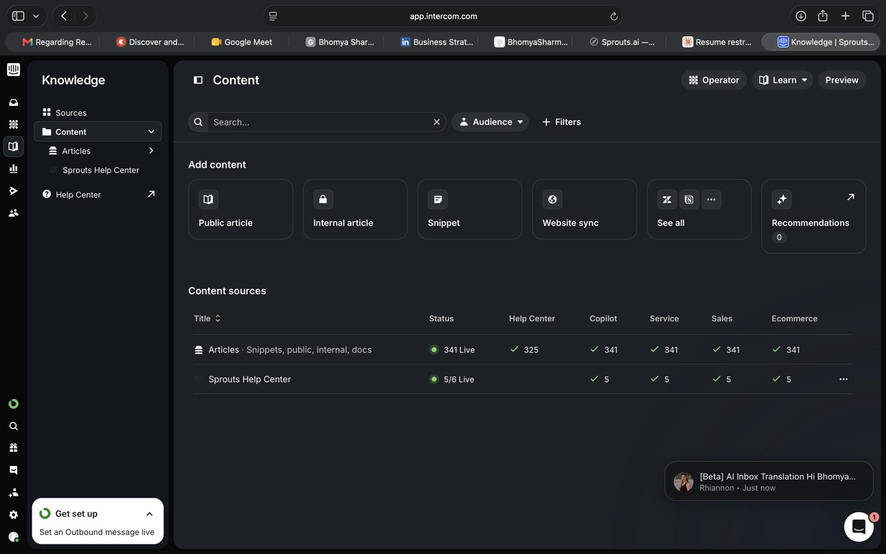

A knowledge-grounded support agent I built and deployed on a live B2B SaaS platform — from a 300+ article knowledge base to a real-time Slack escalation pipeline.
Support volume was growing faster than the CS team could scale, and most incoming questions were repeat, answerable-from-docs questions — not things that needed a human. I owned this end to end: scoping it, building the knowledge layer, testing it against real queries, and shipping it into production.
CS was spending most of its time on questions that were already answered somewhere in our docs — slow for customers, repetitive for the team, and a poor use of human judgment.
Ground an AI agent in a maintained knowledge base, deploy it where customers already ask questions (Intercom), and route anything it can't confidently answer straight to the right human, fast.
Four pieces had to come together for Paula to answer reliably and hand off cleanly when it couldn't.
Structured and synced 300+ support articles (public docs, internal notes, and snippets) so Paula always answers from current, approved content — not a generic model guess.
Deployed Paula inside Intercom, the same place customers already message support, so there was zero new habit for anyone to learn.
Built a real-time Slack alert pipeline — customer name, assigned rep, and the query itself — so anything Paula can't confidently resolve reaches a human immediately, with full context.
Ran structured testing against real historical queries, flagged wrong or low-confidence answers, and iterated on the knowledge base until accuracy held up under live traffic.

45% of incoming queries are now resolved without any CS involvement, freeing the team to focus on the questions that actually need a human.
Recurring query patterns surfaced real customer pain points and knowledge gaps, which fed directly back into the product roadmap.